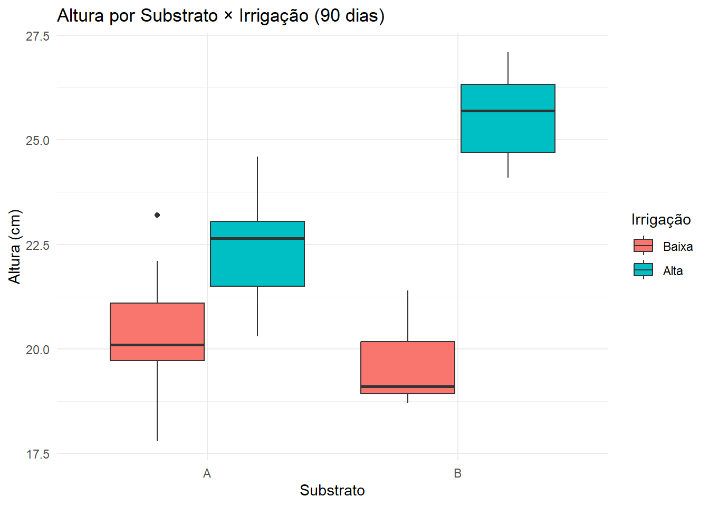
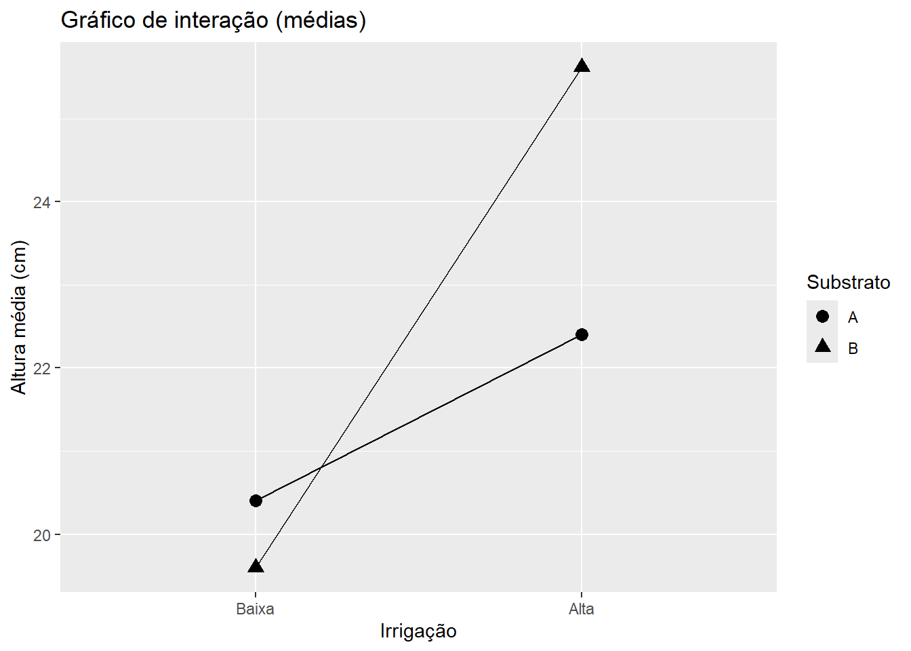
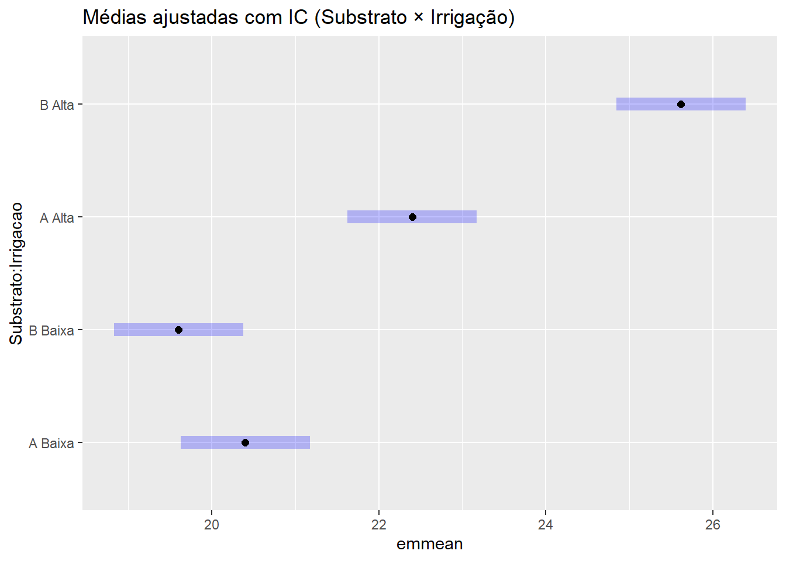

Um viveiro florestal deseja otimizar o crescimento inicial de mudas nativas combinando tipo de substrato e regime de irrigação.
Há indícios de que um substrato responde muito melhor quando a irrigação é alta, mas o comportamento pode se inverter em déficit hídrico.
Para responder, vamos testar os dois fatores simultaneamente com um delineamento fatorial 2×2.
Fator 1 – Substrato: A (comercial estável) vs B (formulação que potencialmente responde mais à água).
Fator 2 – Irrigação: Baixa vs Alta.
Unidade experimental: muda em tubete (55 cm³).
Repetições: 10 por combinação (total = 40).
Variável resposta: Altura (cm) aos 90 dias pós-semeadura.
Dica
💡 Por que fatorial? Compara efeitos principais e testa interação. Se houver interação, o melhor substrato depende da irrigação (e vice‑versa) — informação crucial para o manejo.
8.2 🎯 Objetivos de aprendizagem
Entender efeitos principais e interação em fatoriais.
Especificar e ajustar o modelo linear com interação.
Visualizar e interpretar gráficos de interação.
Traduzir efeitos estatísticos em decisões operacionais (impacto de irrigação).
8.5.1 🔎 Modelo com interação vs. modelo aditivo (sem interação)
Quando testamos Substrato * Irrigacao, estamos ajustando o modelo com interação:
Com interação: \(Y = \mu + \alpha + \beta + \alpha\beta + \varepsilon\)
— Permite que o efeito do substrato dependa do nível de irrigação (e vice-versa).
Sem interação (aditivo): \(Y = \mu + \alpha + \beta + \varepsilon\)
— Assume efeitos constantes (linhas paralelas no gráfico de interação).
Por que ajustar o modelo sem interação?
- Como modelo de referência: se a interação não for significativa, o modelo aditivo é mais simples e direto para comunicar.
- Para comparar ajuste: em casos limítrofes, compare mod_full vs. mod_add para checar se a complexidade extra se justifica.
Código
# Modelo sem interação (aditivo)mod_add <-aov(Altura_cm ~ Substrato + Irrigacao, data = dados)# Comparação formalanova(mod_add, mod_full) # p < 0,05 → manter interação
Analysis of Variance Table
Model 1: Altura_cm ~ Substrato + Irrigacao
Model 2: Altura_cm ~ Substrato * Irrigacao
Res.Df RSS Df Sum of Sq F Pr(>F)
1 37 92.897
2 36 52.496 1 40.401 27.706 6.699e-06 ***
---
Signif. codes: 0 '***' 0.001 '**' 0.01 '*' 0.05 '.' 0.1 ' ' 1
Código
AIC(mod_add, mod_full) # critério de informação (menor é preferível)
df AIC
mod_add 4 155.2196
mod_full 5 134.3894
Nota
📌 Regra prática
- Interação significativa → comunique recomendações condicionais (“Com Irrigação Alta, prefira B; com Baixa, A”).
- Interação não significativa → use o modelo aditivo e reporte efeitos principais.
8.6 📈 Gráficos de apoio
Código
# Boxplot por combinaçãoggplot(dados, aes(x = Substrato, y = Altura_cm, fill = Irrigacao)) +geom_boxplot(position =position_dodge(width = .8)) +labs(title ="Altura por Substrato × Irrigação (90 dias)",x ="Substrato", y ="Altura (cm)", fill ="Irrigação") +theme_minimal()

Código
# Gráfico de interação (médias por célula)medias <- dados %>%group_by(Substrato, Irrigacao) %>%summarise(media =mean(Altura_cm), .groups ="drop")ggplot(medias, aes(Irrigacao, media, group = Substrato, shape = Substrato)) +geom_point(size =3) +geom_line() +labs(title ="Gráfico de interação (médias)",x ="Irrigação", y ="Altura média (cm)")

8.6.1 🧭 “Impacto operacional” da irrigação (o que significa?)
“Impacto operacional” traduz a estatística para decisão de viveiro. Exemplos práticos:
Custo de água/energia: irrigação Alta pode elevar custos; só vale a pena se o ganho de crescimento (ex.: +3 cm aos 90 dias) compensar.
Capacidade de infraestrutura: regimes altos podem exigir bombas/turnos adicionais; às vezes A × Baixa é preferível por simplicidade.
Risco de manejo: irrigação alta pode elevar risco de fungos; se o ganho for pequeno, não compensa.
Meta de produção: se a meta é atingir altura mínima para expedição em 90 dias, escolher a combinação que garanta a meta com menor variância.
Dica
✅ Como escrever no relatório
“Com irrigação Alta, o Substrato B apresentou ganho médio de +3,2 cm (IC 95%: +2,4 a +4,0) em relação a A. Considerando o custo adicional de água e maior risco de doença, recomendamos B × Altaapenas quando a meta de expedição exigir esse ganho.”
8.7 📐 Por que intervalos de confiança (IC)?
O valor-p diz se há evidência de diferença; o IC diz quanto e com que precisão. Em decisões de manejo, o “quanto” é crucial (ganho esperado).
Código
# Com emmeans: estimativas marginais e ICs# install.packages("emmeans") # se necessáriolibrary(emmeans)# ICs para as 4 células (médias ajustadas)emm_cells <-emmeans(mod_full, ~ Substrato * Irrigacao)summary(emm_cells, infer =c(TRUE, TRUE)) # inclui ICs
Substrato Irrigacao emmean SE df lower.CL upper.CL t.ratio p.value
A Baixa 20.4 0.382 36 19.6 21.2 53.422 <.0001
B Baixa 19.6 0.382 36 18.8 20.4 51.327 <.0001
A Alta 22.4 0.382 36 21.6 23.2 58.659 <.0001
B Alta 25.6 0.382 36 24.8 26.4 67.091 <.0001
Confidence level used: 0.95
Código
# Gráfico com ICsplot(emm_cells) +ggtitle("Médias ajustadas com IC (Substrato × Irrigação)")

Importante
⚠️ Decisão baseada em efeito
Mesmo com p < 0,05, um ganho com IC estreito e pequena magnitude pode não justificar alterar o manejo. ICs deixam isso explícito.
8.8 🔬 Efeitos simples (quando há interação)
Código
# Comparar Substrato dentro de cada regime de Irrigaçãodados %>%filter(Irrigacao =="Baixa") %>%aov(Altura_cm ~ Substrato, data = .) %>%summary()
Df Sum Sq Mean Sq F value Pr(>F)
Substrato 1 3.2 3.200 1.933 0.181
Residuals 18 29.8 1.656
Código
dados %>%filter(Irrigacao =="Alta") %>%aov(Altura_cm ~ Substrato, data = .) %>%summary()
Df Sum Sq Mean Sq F value Pr(>F)
Substrato 1 51.84 51.84 41.12 4.9e-06 ***
Residuals 18 22.70 1.26
---
Signif. codes: 0 '***' 0.001 '**' 0.01 '*' 0.05 '.' 0.1 ' ' 1
(Opcional avançado) com emmeans:
Código
emm_sub_by_irr <-emmeans(mod_full, ~ Substrato | Irrigacao)pairs(emm_sub_by_irr) # compara Substrato dentro de cada Irrigação
Irrigacao = Baixa:
contrast estimate SE df t.ratio p.value
A - B 0.80 0.54 36 1.481 0.1472
Irrigacao = Alta:
contrast estimate SE df t.ratio p.value
A - B -3.22 0.54 36 -5.963 <.0001
8.9 🧾 “Cola” para o relatório
Descreva o problema de manejo (otimizar crescimento via Substrato × Irrigação).
Relate a ANOVA fatorial (F, p) para fatores e interação.
Se houver interação, apresente efeitos simples e gráfico de interação.
Faça uma recomendação condicional, citando ICs para justificar a decisão.
8.10 📝 Exercícios
Interação e recomendação condicional: ajuste mod_full e mod_add, compare com anova(mod_add, mod_full). Se houver interação, faça efeitos simples e escreva 2–3 frases com a recomendação condicional.
Médias ajustadas e ICs (quantificar o ganho): use emmeans para obter médias + IC 95% por célula; faça um gráfico e responda: qual combinação tem maior ganho? A margem de incerteza justifica mudar o manejo?
Cenário operacional: suponha custo extra de irrigação Alta de R$ 0,05/muda/dia. Em 90 dias e 10.000 mudas, o custo adicional é R$ 45.000. Com base nos ICs, quando vale a pena B × Alta?
Relato final: entregue um parágrafo que combine estatística + operação (p-valores, ICs, recomendação clara).
8.11 ✅ Síntese
O fatorial 2×2 permite testar efeitos principais e interação.
Modelo com interação vs. modelo aditivo ajuda a decidir como comunicar resultados.
ICs quantificam ganhos e incertezas, fundamentais para decisão de manejo.